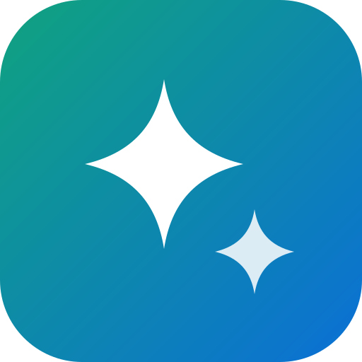

Hôm nay bạn muốn hỏi gì?
GLM-4.7 Flash
Nghĩ kỹ
Mô hình có thể trả lời sai, hãy kiểm tra thông tin quan trọng.
Cài đặt
Mô hình
Nhân vật của bạn
Chọn nhân vật trong menu mô hình ở khung chat. Có sẵn Thầy dạy Toán, Huấn luyện viên IOI, Dịch giả, Gia sư tiếng Anh, Trợ lý viết văn; tạo thêm ở đây.
Thêm nhân vật
Kho kiến thức
Thêm sách, đề thi, ghi chú (PDF, Word, Excel, văn bản). Mỗi câu hỏi, GLM tự tìm đoạn liên quan trong kho rồi trả lời dựa trên đó. Tài liệu chỉ lưu trong trình duyệt này.
Thêm tài liệu
Đồng bộ giữa các máy
Dùng chung lịch sử chat, bộ nhớ và nhân vật trên nhiều máy (Mac, điện thoại, trình duyệt khác). Ảnh trong chat không đồng bộ. Ai có mã đều xem được chat của bạn, nên đừng chia sẻ mã.
Bật đồng bộ (tạo mã mới)
Kết nối
Chép mã
Tắt
Đồng bộ đang tắt.
Lời nhắc hệ thống
Nhiệt độ
Số token tối đa
Phần suy nghĩ
Thu gọn sau khi xong
Luôn mở
Cho AI dùng công cụ: chạy code, tra cứu (Wikipedia, web, thời tiết, tỷ giá, bài báo khoa học, Stack Overflow, GitHub, từ điển) và tạo ảnh
Dữ liệu train
Bấm nút thích dưới câu trả lời tốt để lưu lại. Khi đủ vài trăm câu, xuất file rồi làm theo FINETUNE.md để dạy mô hình trên Google Colab.
Xuất data.jsonl
Bộ nhớ
AI dùng những điều này ở mọi đoạn chat. Trong lúc chat, cứ nói "hãy nhớ…" để thêm.
Thêm
Xoá mọi đoạn chat
Lưu